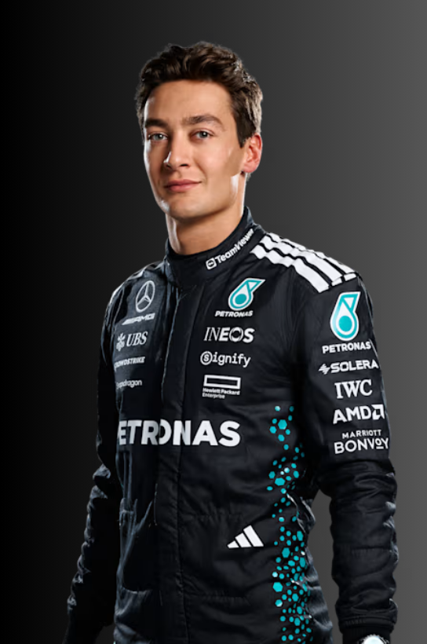
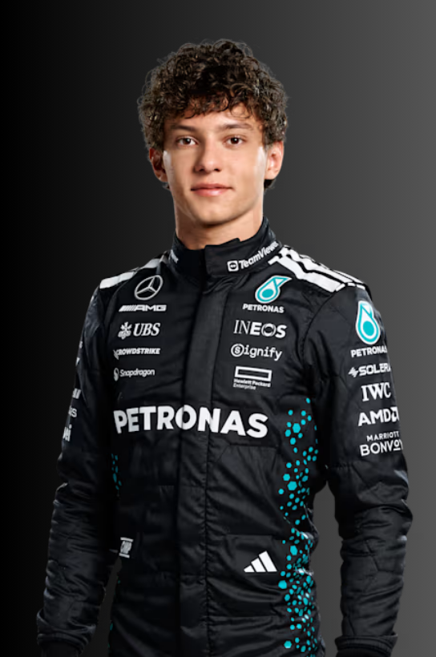

3 - George Russell
País que representa - Reino Unido
Ano de nascimento - 1998
Ano de estreia - 2019
Vitórias de campeonato - 0
Pódios - 21
Pole Positions - 6
Vitória em corrida - 4
Pole em sprint - 0
Vitória em sprint - 1

12 - Andrea Kimi Antonelli
que representa - Itália
Ano de nascimento - 2006
Ano de estreia - 2025
Vitórias de campeonato - 0
Pódios - 1
Pole Positions - 0
Vitória em corrida - 0
Pole em sprint - 1
Vitória em sprint - 0